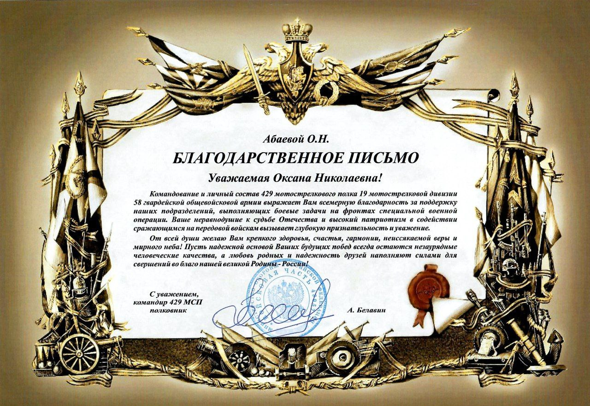
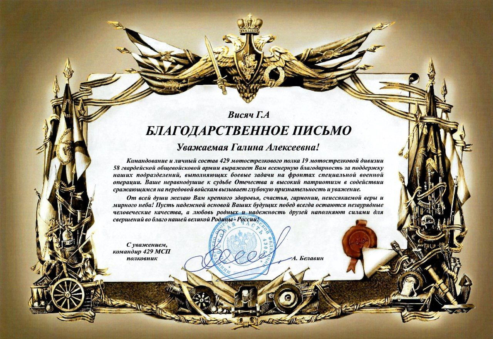
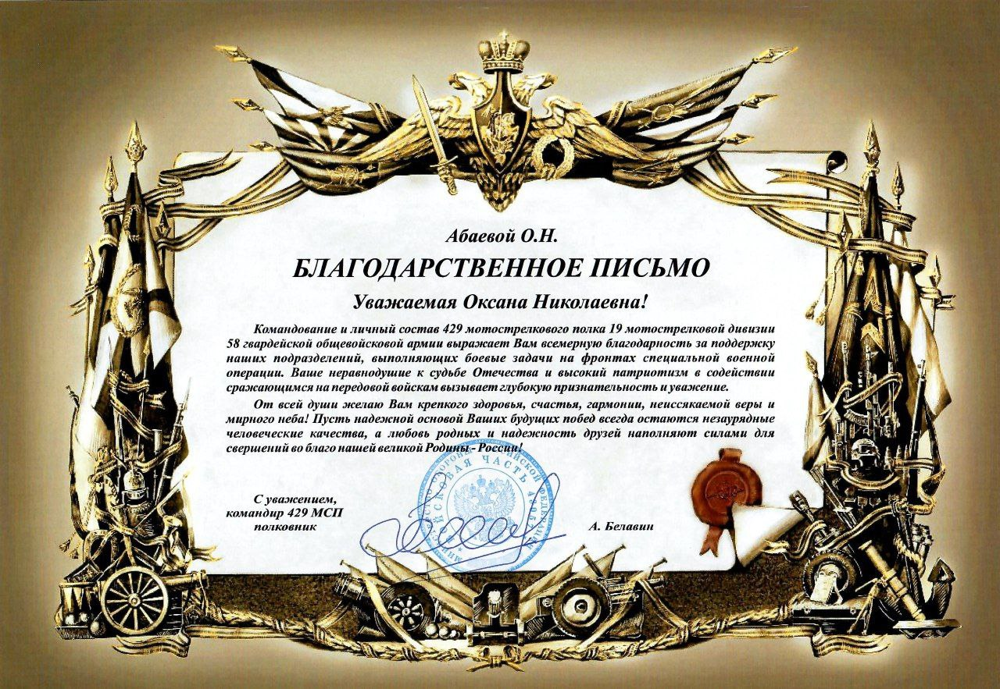
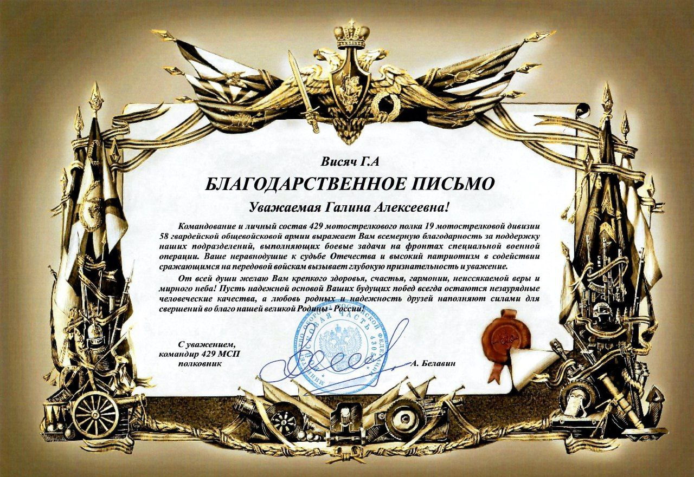

«Будем жить!»
Благотворительный фонд
поддержки воинов Осетии и увековечивания памяти защитников Отечества

Заместитель председателя фонда “Будем жить!” по связям с общественностью.
Абаева Оксана Николаевна
Председатель фонда “Будем жить!”
Висяч Галина Алексеевна
Заместитель председателя фонда “Будем жить!”, руководитель проектов и направлений
Астахова Марина РемовнаО нас
Благотворительный фонд «Будем жить!» создан инициативной группой родственников воинов, погибших в зоне проведения СВО.
Оказавшись лицом к лицу с непоправимым горем, мы нашли в себе силы организовать работу фонда, направленную на поддержку семей и увековечивание памяти наших героев.


Проекты


Пожертвования принимаются по оплате через QR-код
Благодарим за вашу поддержку нашего благотворительного фонда! Каждое пожертвование имеет огромное значение и помогает нам творить благие дела. Мы ценим ваше доверие в нашу миссию. Спасибо,что помогаете делать мир лучше!

Взаимодействие
Фонд активно взаимодействует с государственными структурами и некоммерческими организациями.
Государственный фонд «Защитники отечества», Министерство образования РСО-Алания, министерство культуры РСО-Алания, Администрация местного самоуправления г. Владикавказ, ГБНОУ «Республиканский лицей искусств», Детская музыкальная школа №1 им. П.И.Чайковского, ДШИ №2 г. Владикавказ, Городской совет ветеранов Владикавказа, Епархия Владикавказская и Аланская, МОО «Землячество Алании» г. Донецк, АНО Ветеранов Органов Госбезопасности "Вымпел-Алания", региональное отделение общероссийской общественно-государственной организации «Союз женщин России» РСО-Алания.

 




Наш Храм-Памятник еще не построен, идет подготовка к строительству, но сегодня 7 февраля, в день Иконы Божией Матери «Утоли моя печали», перед образом Пресвятой Богородицы, в честь которой будет строится наш храм, на Воинском мемориале восточного кладбища города Владикавказ, прошло первое богослужение настоятелем храма Иоанна Воина отцом Василием, на месте, где он будет построен. Это первый наш престольный праздник. Наш храм еще не построен, но он незримо существует для нас. Семьи погибших воинов отслужили акафист Пресвятой Богородице пред иконой «Утоли моя печали», подаренной для нашего будущего храма, Архиепископом Владикавказским и Аланским Владыкой Герасимом.
После службы отец Василий совершил заупокойную литию по нашим павшим воинам, покоящихся в данном месте, и обратился к присутствующим со словами утешения, а также поздравил всех с праздником в честь праздника иконы Божьей матери «Утоли моя печали» и с первым престольным днем.

В Северную Осетию с рабочим визитом прибыл спикер Народного совета ДНР Артем Владимирович Жога.
Артём Владимирович встретился с семьями погибших военнослужащих в зоне СВО. На встрече были заданы волнующие вопросы.
Руководители БФ "Будем жить!" обсудили важные вопросы по основным направлениям деятельности фонда.

Память нетленна…
Во Владикавказском многопрофильном техникуме имени Георгия Калоева 22 февраля отмечали День защитника Отечества, делая основной акцент на специальной военной операции.
Гостями праздника были Вадим Таймуразович Габеев, заместитель министра образования и науки Республики Северная Осетия-Алания, Индира Камболова, главный специалист Министерства; Представители регионального отделения всероссийской общественной организации ветеранов «Боевое братство» ветераны боевых действий Леонид Гибизов и Тамаз Музаев; Войск Национальной гвардии капитан Максим Колиогло;

22 февраля БФ "Будем жить!" принял участие в мероприятии посвященному открытию мемориальной стены "Воинской Славы" в память о выпускниках Владикавказского Горно-Металлургического техникума, погибших в ходе СВО.
В рамках сотрудничества фонда с учебными заведениями по увековечиванию памяти защитников Отечества, наш фонд предоставил организаторам информационную поддержку.
Почтить светлую память погибших, отдать дань уважения подвигу собрались родные и близкие, педагоги и студенты техникума, члены общественных организаций.
Почтить светлую память погибших, отдать дань уважения подвигу собрались родные и близкие, педагоги и студенты техникума, члены общественных организаций.
"Тяжело говорить о потерях, а когда это молодые ребята, вдвойне тяжело... Вы потеряли самое дорогое, что у Вас было. Спасибо Вам за ваших сыновей и мужей, они достойно прожили свою короткую жизнь, отдали её за наше с вами счастье и мирное небо. Пока мы живы, будем помнить о наших героях!»
Республика Северная Осетия-Алания
г. Владикавказ ул. Димитрова д.2 офис 406
Телефон: +79891350607
Email: fond.budemzhit@mail.ru
VK: https://vk.com/bubemzhit2023
Telegram: https://t.me/bfbudemzhit